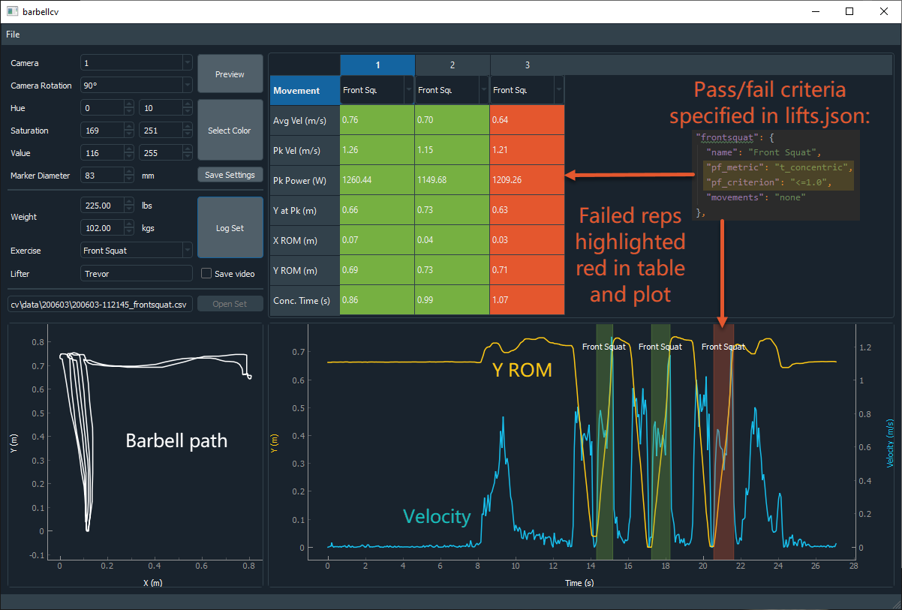
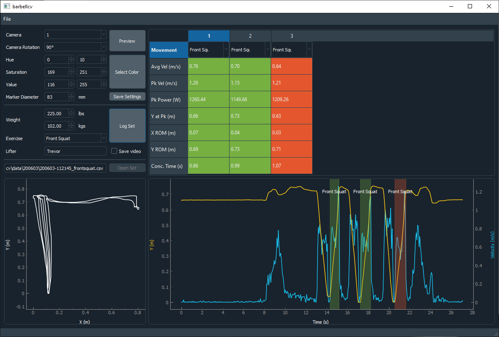
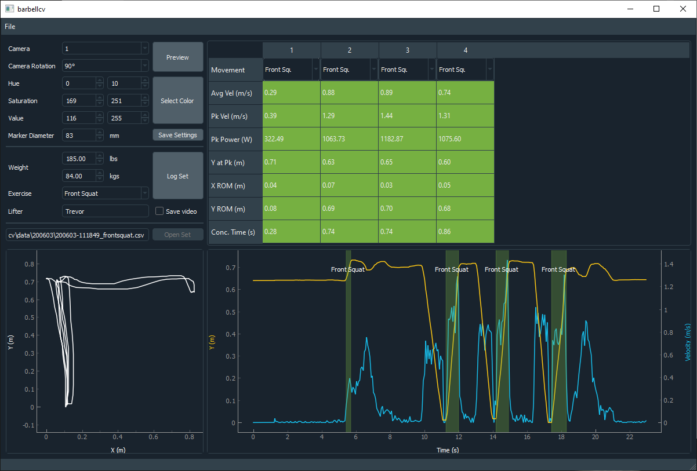
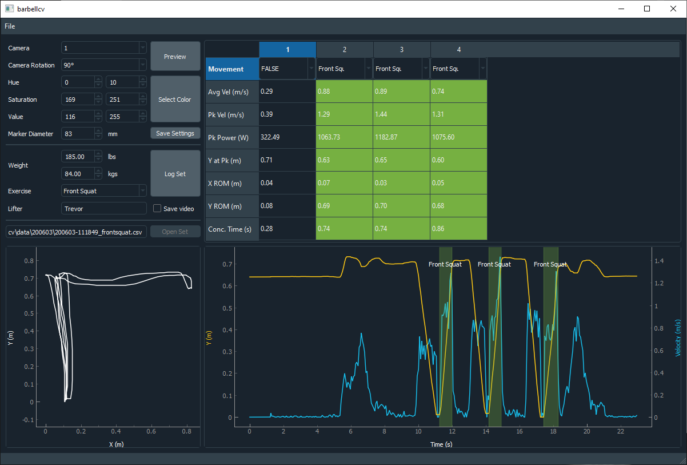

Reps are classified based on their pass/fail criteria:
If a rep is completed but fails the success criterion, it is highlighted in red:
Here we see an example of a false front squat rep from the unracking of the barbell:
The user can correct this false rep by changing its "Movement" column value to "FALSE":
